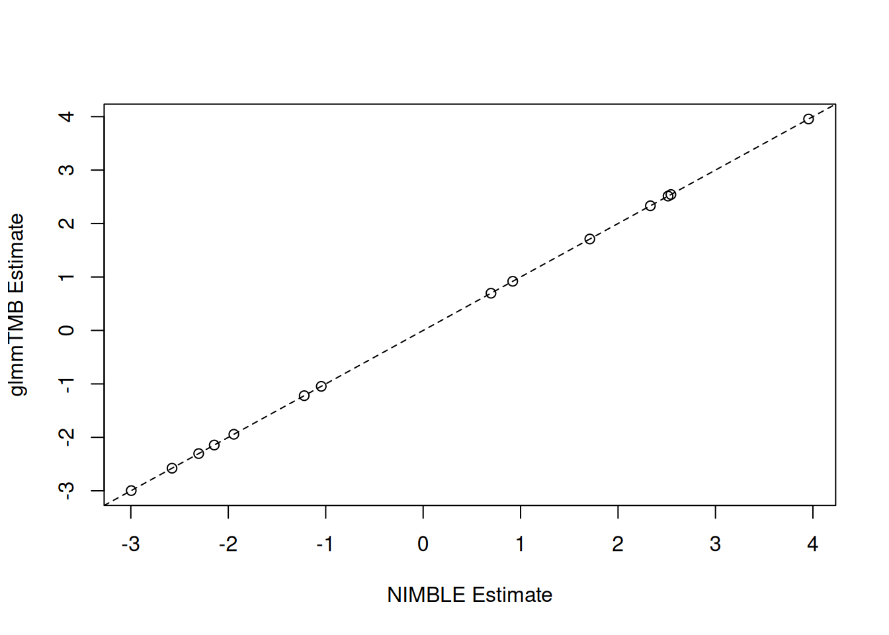
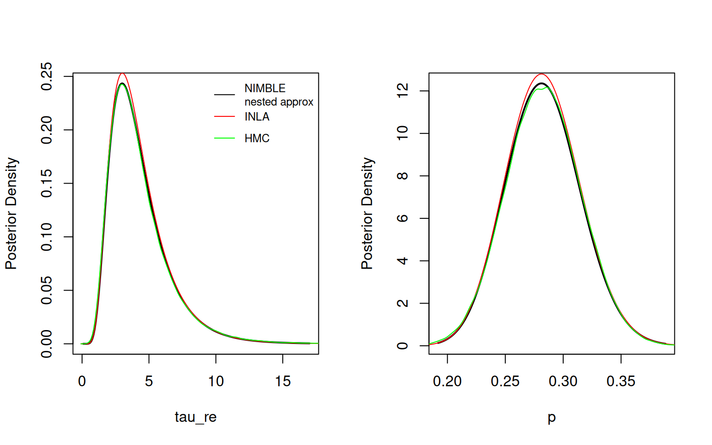
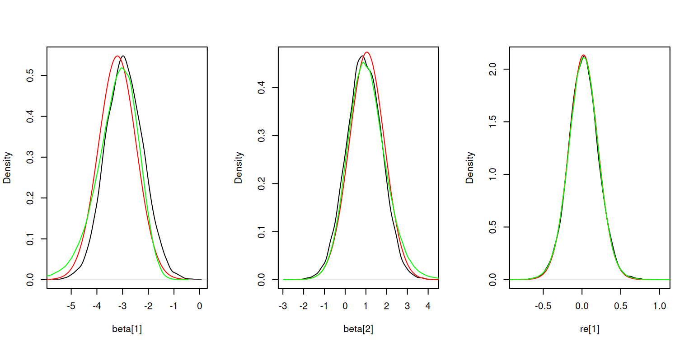
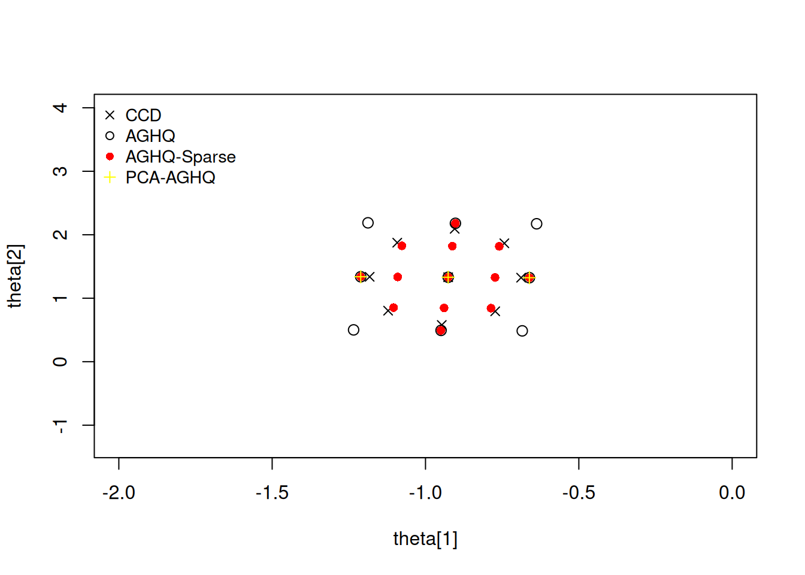
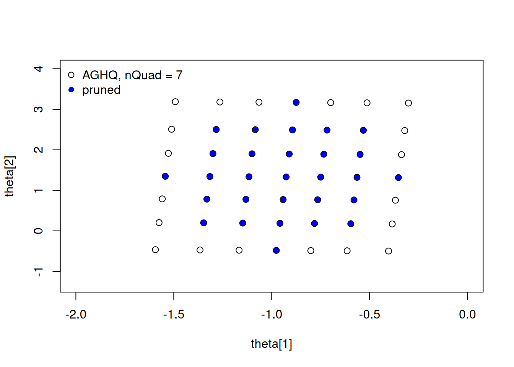
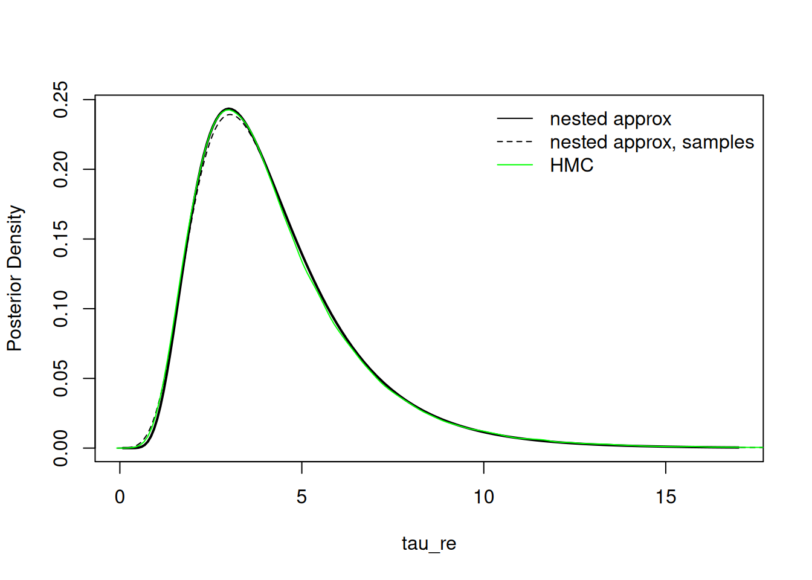

library(glmmTMB)
data(Salamanders)
fit_tmb <- glmmTMB(count ~ spp * mined + (1|site), zi=~1, family=poisson, data=Salamanders)Using nimbleQuad for maximum likelihood estimation and deterministic posterior approximation
Introduction
The nimbleQuad package provides quadrature-based inference methods that use Laplace and Adaptive Gauss-Hermite Quadrature (AGHQ) approximation. It has two main components:
- Laplace and AGHQ approximations for marginalizing over latent nodes (e.g., random effects) to perform approximate maximum likelihood estimation.
- Deterministic nested quadrature methods for posterior approximation using Laplace approximation for the inner marginalization of the latent nodes and general quadrature methods for outer marginalization of the parameter nodes. These methods borrow ideas from the popular INLA approach (Rue, Martino, and Chopin 2009) and from the extended Gaussian latent model approach provided in the R
aghqpackage (Stringer, Brown, and Stafford 2023).
By providing these methods in the NIMBLE system, via nimbleQuad, users can use the methods on models constructed using the NIMBLE model language (which extends the BUGS model language) and can also customize and extend the algorithms.
In this document we will introduce some of the workflow and show the flexibility available when using buildNestedApprox for posterior approximations.
Additional details about nimbleQuad can be found in the NIMBLE User Manual.
What is NIMBLE?
NIMBLE is a system for writing hierarchical statistical models and algorithms. It is distributed as the R package, nimble. NIMBLE includes:
A dialect of the BUGS model language that is extensible. NIMBLE uses almost the same model code as WinBUGS, OpenBUGS, and JAGS. Being “extensible” means that it is possible to write new functions and distributions and use them in your models.
An algorithm library including Markov chain Monte Carlo (MCMC) and other methods.
A compiler that generates C++ for each model and algorithm, compiles the C++, and lets you use it from R. You don’t need to know anything about C++ to use nimble.
Illustrative Example
For this vignette we will use the salamander example from the R package glmmTMB. Example usage of this model can be seen by running ?glmmTMB. The data are repeated counts, \(y\), of salamanders at multiple sites, which are zero-inflated. Some of the sites are mined, and some are not (\(x\)). Based on glmmTMB, we can analyze these data as
\[ y_i|z_i \sim \text{Poisson}(z_i\lambda_i) \]
\[ z_i \sim \text{Bernoulli}(1-p_i) \]
\[ \text{log}(\lambda_i) = \beta x_i + u_{site_i} \]
\[ \text{logit}(p_i) = \alpha_0 x_i \]
\[ u_{j} \sim \text{Normal}(0, \sigma^2) \]
The maximum likelihood estimator can be found with glmmTMB.
We can also fit this model in INLA to get the approximate posterior using the “zeroinflatedpoisson1” model family.
library(INLA)
fit_inla <- inla( count ~ spp * mined + f(site, model="iid"),
quantiles = c(.025,.25,.5,.75,.975), family= "zeroinflatedpoisson1", data=Salamanders,
control.inla = list(int.strategy = "ccd"))Building a GLMM in NIMBLE
To write this model in NIMBLE we will first write a zero-inflated Poisson distribution that marginalizes over the indirectly observed discrete value \(z\). When \(y=0\), \(z\) is a discrete latent variable. In order to use the methods in nimbleQuad, all the latent variables in this model must be continuous.
nimbleQuad relies on automatic differentiation (AD) to take derivatives. To include AD in a nimbleFunction we must set buildDerivs = 'run'.
A nimbleFunction, rZIP, to simulate from the distribution is also provided for convenience, although this is not strictly needed for this model to fit.
library(nimbleQuad)dZIP <- nimbleFunction(
run = function(x = double(), lambda = double(),
zeroProb = double(), log = logical(0, default = 0)) {
returnType(double())
## For use with AD, we cannot use an `if` statement to handle the mixture.
prob <- zeroProb * dbinom(x, size = 1, prob = 0) + (1 - zeroProb) * dpois(x, lambda)
if (log) return(log(prob))
return(prob)
},
buildDerivs = 'run' # Needed when used with AD-based algorithms.
)
rZIP <- nimbleFunction(
run = function(n = integer(), lambda = double(), zeroProb = double()) {
returnType(double())
isStructuralZero <- rbinom(1, prob = zeroProb, size = 1)
if (isStructuralZero) return(0)
return(rpois(1, lambda))
})We will use prior distributions to match the default priors in the INLA model that was fit above to allow direct comparison of results. See inla.priors.used(fit_inla) for a description of the default priors. INLA places a logit-normal prior on \(p\). For convenience, we will write our own logit-normal prior. In this case, we explicitly register the distribution to tell NIMBLE the range of possible values, needed for use in NIMBLE’s parameter transformation system.
dlogitnormal = nimbleFunction(
run = function(x = double(), mean = double(), sd = double(),
log = logical(0, default = 0)){
ans <- dnorm(logit(x), mean = mean, sd = sd, log = TRUE) - log(x) - log(1-x)
returnType(double())
if(log) return(ans)
else return(exp(ans))
},
buildDerivs = 'run'
)
registerDistributions(list(
dlogitnormal = list(BUGSdist = "dlogitnormal(mean, sd)", range = c(0,1))
)) [Warning] Random generation function for dlogitnormal is not available. NIMBLE is generating a placeholder function, rlogitnormal, that will invoke an error if an algorithm needs to simulate from this distribution. Some algorithms (such as random-walk Metropolis MCMC sampling) will work without the ability to simulate from the distribution. If simulation is needed, provide a nimbleFunction (with no setup code) to do it.If not trying to use the same model as INLA, one might choose different priors, and one would not necessarily need to define the logit-normal distribution.
Following INLA, we use a completely flat prior on the intercept dflat, a gamma prior on precision tau_re and a logit-normal on p. We can now write the model code, and then provide constants and data to build the model.
code <- nimbleCode({
beta[1] ~ dflat()
for( i in 2:np )
beta[i] ~ dnorm(0, tau = 0.001)
tau_re ~ dgamma(shape = 1, rate = 5e-5)
p ~ dlogitnormal(mean = -1, sd = 1/sqrt(0.2))
for(i in 1:nsites)
re[i] ~ dnorm(0, tau = tau_re)
for( i in 1:nobs ){
log(lam[i]) <- sum(beta[1:np]*X[i,1:np]) + re[site[i]]
count[i] ~ dZIP(lambda = lam[i], zeroProb = p)
}
})
nimconst <- list()
nimconst$X <- as.matrix(model.matrix( ~ spp * mined, data = Salamanders ))
nimconst$np <- ncol(nimconst$X)
nimconst$nobs <- nrow(nimconst$X)
nimconst$site <- as.numeric(factor(Salamanders$site))
nimconst$nsites <- max(nimconst$site)
nimdata <- list()
nimdata$count <- Salamanders$count
inits <- list(p = .29,
tau_re = 3,
re = rnorm(nimconst$nsites,0,0.1),
beta = rnorm(nimconst$np))
m <- nimbleModel(code, data = nimdata, constants = nimconst, inits = inits, buildDerivs = TRUE)Defining model [Note] Registering 'dZIP' as a distribution based on its use in BUGS code. If you make changes to the nimbleFunctions for the distribution, you must call 'deregisterDistributions' before using the distribution in BUGS code for those changes to take effect.Building modelSetting data and initial valuesRunning calculate on model
[Note] Any error reports that follow may simply reflect missing values in model variables.Checking model sizes and dimensionscm <- compileNimble(m)Compiling
[Note] This may take a minute.
[Note] Use 'showCompilerOutput = TRUE' to see C++ compilation details.Note that since nimbleQuad methods use NIMBLE’s automatic differentiation (AD) system, we set buildDerivs = TRUE when building the nimble model.
Using the Laplace Approximation
We can find the maximum likelihood estimate by using buildLaplace (or buildAGHQ if we want more quadrature nodes for marginalizing over the random effects, as discussed below).
laplace <- buildLaplace(model = m)Building 23 individual Laplace approximations (one dot for each): .......................claplace <- compileNimble(laplace)Compiling
[Note] This may take a minute.
[Note] Use 'showCompilerOutput = TRUE' to see C++ compilation details.nimble_fit <- runLaplace(claplace)NIMBLE reports that it is able to use 23 separate (one-dimensional) Laplace approximations (because the random effects, plus their data dependencies, are conditionally independent).
Let’s compare the results with glmmTMB. The results are very similar.
nimble_params <- nimble_fit$summary$params
nimble_fixef <- nimble_params[grep("beta", rownames(nimble_params)),]
plot(nimble_fixef[, "estimate"], fixef(fit_tmb)$cond,
xlab = "NIMBLE Estimate", ylab = "glmmTMB Estimate")
abline(a = 0, b = 1, lty = 2)
# logit(p):
fit_tmb$fit$par["betazi"] # TMB betazi
-0.933805 logit(nimble_params["p",1]) # NIMBLE[1] -0.9338251# tau_re
exp(-2*fit_tmb$fit$par["theta"]) # TMB theta
3.646564 nimble_params["tau_re",1] # NIMBLE[1] 3.648097It can be helpful to check the Laplace approximation at the MLE by increasing the number of quadrature nodes using AGHQ. If the likelihood is very different when increasing the number of quadrature nodes, that indicates that Laplace was not a good approximation to the marginal likelihood. In this particular case, since we have have conditionally independent random effects (and therefore a set of 1-dimensional AGHQ approximations), increasing the number of quadrature nodes will be relatively quick, but in other cases it can be very slow.
claplace$calcLogLik(nimble_fit$summary$params[, 'estimate'], trans = FALSE)[1] -881.9147claplace$updateSettings(nQuad = 5)
claplace$calcLogLik(nimble_fit$summary$params[, 'estimate'], trans = FALSE)[1] -881.8752claplace$updateSettings(nQuad = 11)
claplace$calcLogLik(nimble_fit$summary$params[, 'estimate'], trans = FALSE)[1] -881.8749Finding the Posterior Mode
Similar to rstan, we can find the posterior mode (MAP), using findMAP. Having found the posterior mode, we can approximate the posterior distribution using the Hessian, similar to the MLE. In INLA, this is referred to as empirical Bayes (EB).
claplace$updateSettings(nQuad = 1) # Reset to use of Laplace.
mode <- claplace$findMAP()
summary_mode <- summaryLaplace(claplace, mode)
summary_mode$params estimate stdError
beta[1] -2.9480593 0.73037698
beta[2] 0.9057569 0.84578328
beta[3] 2.3137081 0.75535597
beta[4] 0.6821166 0.87486699
beta[5] 1.6941718 0.77843578
beta[6] 2.5049842 0.74244105
beta[7] 2.5285631 0.74354887
beta[8] 3.9088307 0.74894207
beta[9] -2.2879169 0.88553791
beta[10] -2.1261196 0.76825335
beta[11] -1.2050890 0.90116109
beta[12] -1.0299955 0.78868138
beta[13] -1.9337187 0.75298920
beta[14] -2.5626526 0.75945010
tau_re 4.5731703 2.18471379
p 0.2833263 0.03245053One can also “manually” use the optimize method of a built AGHQ or Laplace object to either penalize the likelihood or find the posterior mode. To simply penalize the likelihood using the prior distributions on parameters, one sets includePrior = TRUE. If the posterior mode is of interest, then one must also include the Jacobian transformation by setting includeJacobian = TRUE (this is what findMAP does).
Posterior Approximation
Posterior approximation is done by buildNestedApprox (to build the approximation) and runNestedApprox (to calculate the approximation). Note that the setup for buildNestedApproxis similar to buildLaplace except that we refer to the combination of random effects and fixed effects as latentNodes and the hyperparameters as paramNodes, which we will refer to more generally as the “parameters”. Including fixed effects with the random effects reduces the dimension of the outer quadrature, which reduces computation time. However, in some cases one may want to include the fixed effects in the paramNodes, as the choice of where to include the fixed effects can affect statistical performance. If the user does not specify latentNodes and paramNodes, NIMBLE will automatically determine them based on the graphical structure of the model, and the user can check that a reasonable determination has been made.
approx <- buildNestedApprox(model = m,
paramNodes = c('p', 'tau_re'),
latentNodes = c('beta', 're'))Building nested posterior approximation for the following node sets:
- parameter nodes: p, tau_re
- latent nodes: beta (14 elements), re (23 elements)
with AGHQ grid for the parameters and Laplace approximation for the latent nodes.Building Laplace approximation.capprox <- compileNimble(approx, project = m)Compiling
[Note] This may take a minute.
[Note] Use 'showCompilerOutput = TRUE' to see C++ compilation details.We then use runNestedApprox to run the basic approximation and apply various methods to the output object to carry out further inference. The steps include:
- Find posterior mode of the parameters using Laplace (or AGHQ) to marginalize over the latent nodes.
- Use an integration-free method analogous to that of INLA to quickly approximate the marginal posterior distribution of each parameter (Martins et al. 2013).
- Calculate the posterior density of the parameters across the parameter quadrature grid (the default grid uses the CCD (central composite design) approach when the number of parameters is greater than two). In addition, a quadrature-based marginal log likelihood is produced based on this computation.
- Sample from the joint posterior of the
latentNodesusing a mixture of multivariate normal distributions with mean, covariance, and weights obtained at each grid point in the parameter quadrature grid.
Using the integration-free method is the fastest way to produce marginal posterior density estimates of the parameters. Following the methodology of INLA, this is done by using an asymmetric multivariate normal distribution to approximate the posterior density of the parameters.
If more accuracy is required, quadrature can be used such as AGHQ to marginalize over the other parameters (similar to the R package aghq). Here the user can choose between AGHQ, CCD, sparse AGHQ, or a user-provided quadrature rule, as discussed further below). Marginal density values are computed at a fixed set of points and then a spline is used for computations with the univariate density.
For inference on the latent nodes, at each point in the parameter grid, Laplace is used to marginalize the latent nodes to calculate the posterior density for the point, which requires an inner optimization. This can be computationally expensive (particularly with a large number of latent nodes), scaling with the number of grid points. CCD is the default (as is done in INLA) because it scales well to higher dimensions. Alternatively, an AGHQ grid can be used. This will be computationally more expensive because there are more grid points but potentially more accurate. The user can also provide their own grid. By default, we do not do compute the parameter grid when calling runNestedApprox unless requested, because the integration-free estimates do not require it. However, it is necessary for inference on the latent nodes and is done automatically when the latent nodes are sampled (via sampleLatents).
Here is the initial (integration-free) inference for the parameters. We compare results to samples from a long HMC (MCMC) run.
result <- runNestedApprox(approx = capprox)Finding posterior mode for parameter(s).resultModel (hyper)parameters:
mean sd 2.5% 25% 50% 75% 97.5%
p 0.2829532 0.03213736 0.2223162 0.260750 0.2822413 0.3042659 0.3480408
tau_re 4.2832293 2.21981565 1.4690113 2.737785 3.7993333 5.2801515 9.9047111
Marginal log-likelihood (asymmetric Gaussian approximation): -957.392(*)
(*) Invalid for improper priors and may not be useful for non-informative priors.par(mfrow = c(1,2))
result$plotMarginal("tau_re", xlim = c(0,17), lwd=2)
lines(hmc_tau_re$x, inla.dmarginal(hmc_tau_re$x, fit_inla$marginals.hyperpar[[2]]), col = 'red')
lines(hmc_tau_re, col = 'green')
legend("topright", legend = c("NIMBLE\nnested approx", "INLA", "HMC"),
col = c('black','red','green'), lty = rep(1,3), cex = 0.75, bty = 'n')
result$plotMarginal("p", lwd=2)
lines(hmc_p$x, inla.dmarginal(hmc_p$x, fit_inla$marginals.hyperpar[[1]]), col = 'red')
lines(hmc_p, col = 'green')
The nested approximation and INLA results match MCMC well, though for some reason the densities plotted by INLA don’t quite integrate to one and therefore lies above the other two lines.
Here is the sampling-based inference for the latent nodes. The density estimates match HMC reasonably well, but not quite as well as INLA for the fixed effects.
# remove these lines later
# hmc_beta1 <- density(samples_hmc[ , 'beta[1]'])
# hmc_beta2 <- density(samples_hmc[ , 'beta[2]'])
# hmc_re1 <- density(samples_hmc[ , 're[1]'])
result$sampleLatents(10000)Calculating inner AGHQ/Laplace approximation at 9 parameter (outer)
grid points (one dot per point): .........par(mfrow = c(1,3))
plot(density(result$samples[, "beta[1]"]), main = "", xlab = "beta[1]")
lines(hmc_beta1$x, inla.dmarginal(hmc_beta1$x, fit_inla$marginals.fixed[[1]]), col = 'red')
lines(hmc_beta1, col = 'green')
plot(density(result$samples[, "beta[2]"]), main = "", xlab = "beta[2]")
lines(hmc_beta2$x, inla.dmarginal(hmc_beta2$x, fit_inla$marginals.fixed[[2]]), col = 'red')
lines(hmc_beta2, col = 'green')
plot(density(result$samples[, "re[1]"]), main = "", xlab = "re[1]")
lines(hmc_re1$x, inla.dmarginal(hmc_re1$x, fit_inla$marginals.random[[1]][[1]]), col = 'red')
lines(hmc_re1, col = 'green')
Improving the Parameter Marginals
Although the integration-free method is fast and performs reasonably well, it may be that the user wishes to get a more exact marginal. This is done individually for each parameter of interest, marginalizing over the remaining parameters using an outer quadrature rule (AGHQ, CCD, AGHQSPARSE, USER), with AGHQ as the default. We choose the number of quadrature points for marginalization (nQuad) as well as the number of points along a grid to evaluate the marginal (nMarginalGrid). Increasing either can improve performance but at the expense of additional computation and generally with diminishing improvement.
result # Original (integration-free) parameter estimatesModel (hyper)parameters:
mean sd 2.5% 25% 50% 75% 97.5%
p 0.2829532 0.03213736 0.2223162 0.260750 0.2822413 0.3042659 0.3480408
tau_re 4.2832293 2.21981565 1.4690113 2.737785 3.7993333 5.2801515 9.9047111
Marginal log-likelihood (asymmetric Gaussian approximation): -957.392(*)
Marginal log-likelihood (grid-based): -957.3845(*)
(*) Invalid for improper priors and may not be useful for non-informative priors.result$improveParamMarginals(nodes = c('tau_re', 'p'),
nMarginalGrid = 9, nQuad = 3, quadRule = "AGHQ")Approximating 2 individual parameter marginal densities via AGHQ: - calculating inner AGHQ/Laplace approximation at (9) marginal points
with 3 quadrature grid points (one dot per grid point): (1)...(2)...(3)...(4)...(5)...(6)...(7)...(8)...(9)...
- calculating inner AGHQ/Laplace approximation at (9) marginal points
with 3 quadrature grid points (one dot per grid point): (1)...(2)...(3)...(4)...(5)...(6)...(7)...(8)...(9)...Model (hyper)parameters:
mean sd 2.5% 25% 50% 75% 97.5%
p 0.2829161 0.03233042 0.220414 0.2608876 0.2826332 0.3046184 0.347118
tau_re 4.3240215 2.34440783 1.450420 2.7365618 3.8040399 5.3028558 10.249151
Marginal log-likelihood (asymmetric Gaussian approximation): -957.392(*)
Marginal log-likelihood (grid-based): -957.3845(*)
(*) Invalid for improper priors and may not be useful for non-informative priors.Comparing to the quantiles from the integration-free approach, the differences are generally minor, but there is a noticeable difference in the right tail for tau_re.
Customizing the Quadrature Grid
For the salamanders example, we have two parameters, for which nimbleQuad defaults to using AGHQ as the parameter grid. The grid points are skewed based on the skew from the asymmetric multivariate normal approximation, and then scaled using spectral decomposition (or Cholesky decomposition).
For more than two parameters, nimbleQuad defaults to using a CCD grid, also used by INLA.
The user may also provide their own parameter grid. This must be written as a nimbleFunction with some specific components.
A good choice for large dimensional problems is the PCA-AGHQ rule (Howes et al. 2026). This rule uses AGHQ along the primary principal components of the spectral transformation and Laplace on the other dimensions. We can use the R package mvQuad to write our own simple version.
RmvQuad <- function(levels, d) {
out <- mvQuad::createNIGrid(dim=d, type = "GHe", level=levels)
cbind(out$weights, out$nodes)
}
nimMVQuad <- nimbleRcall(function(levels = double(1), d = double()){}, Rfun = "RmvQuad", returnType = double(2))
PCA_AGHQ <- nimbleFunction(
contains = QUAD_RULE_BASE,
name = "quadRule_USER",
setup = function() {},
run = function() {},
methods = list(
buildGrid = function(levels = integer(0, default = 0), d = integer(0, default = 1)) {
levs <- c(levels,1)
output <- nimMVQuad(levels = levs, d = d)
returnType(double(2))
return(output)
}
)
)We pass the user quadrature rule nimbleFunction as the control list element paramGridRule. By default a user-supplied quadrature rule should construct a multivariate grid (i.e., when specifying paramGridRule_userType = "MULTI", which is the default value). Alternatively the user function can be defined such that it returns a single dimension grid and then a multi-dimensional grid can be constructed by nimbleQuad, by specifying "PRODUCT" or "SPARSE". Below we explicitly define the transformation method quadTransform = "spectral", although this is the default.
approx <- buildNestedApprox(model = m,
paramNodes = c('p', 'tau_re'),
latentNodes = c('beta', 're'),
control = list(paramGridRule = PCA_AGHQ,
paramGridRule_userType = "MULTI",
quadTransform = "spectral")
)Building nested posterior approximation for the following node sets:
- parameter nodes: p, tau_re
- latent nodes: beta (14 elements), re (23 elements)
with quadRule_USER grid for the parameters and Laplace approximation for the latent nodes.Building Laplace approximation.capprox <- compileNimble(approx, project = m, resetFunctions = TRUE)Compiling
[Note] This may take a minute.
[Note] Use 'showCompilerOutput = TRUE' to see C++ compilation details.result <- runNestedApprox(approx = capprox)Finding posterior mode for parameter(s).We can look at the different quadrature grids by accessing the capprox object itself. Note that although "AGHQSPARSE" is available, it cannot be used to sample the latent nodes as the quadrature weights can be negative. For demonstration, we will compute the posterior density for each grid calcParamGrid to compare the different grids.
capprox$buildParamGrid(quadRule = "USER")
nodes_user <- capprox$getParamGrid()
capprox$calcParamGrid()Calculating inner AGHQ/Laplace approximation at 3 parameter (outer)
grid points (one dot per point): ...capprox$buildParamGrid(quadRule = "CCD")
nodes_ccd <- capprox$getParamGrid()
capprox$calcParamGrid()Calculating inner AGHQ/Laplace approximation at 9 parameter (outer)
grid points (one dot per point): .........capprox$buildParamGrid(quadRule = "AGHQ")
nodes_aghq <- capprox$getParamGrid()
capprox$calcParamGrid()Calculating inner AGHQ/Laplace approximation at 9 parameter (outer)
grid points (one dot per point): .........capprox$buildParamGrid(quadRule = "AGHQSPARSE")
nodes_aghqsparse <- capprox$getParamGrid()
capprox$calcParamGrid() [Note] Sparse grids cannot be used to simulate latent effects (the main reason to compute the posterior on the parameter grid).
Calculating inner AGHQ/Laplace approximation at 13 parameter (outer)
grid points (one dot per point): .............## Visualize the grids.
plot(nodes_ccd, xlim = c(-2,0), ylim = c(-1.3, 4), # xlim = c(-1.3, -0.6), ylim = c(0.4, 2.4),
xlab = "theta[1]", ylab = "theta[2]", pch = 4)
points(nodes_aghq, pch = 1, cex = 1.2)
points(nodes_aghqsparse, pch = 16, col = 'red')
points(nodes_user, pch = 3, col = 'yellow')
legend("topleft", horiz=FALSE, bty = 'n',
legend = c("CCD", "AGHQ", "AGHQ-Sparse", "PCA-AGHQ"),
pch = c(4,1,16,3), col = c('black','black','red','yellow'), cex = 0.9)
Note here that the AGHQ-Sparse grid has more points than the AGHQ (product-based) grid. This is because choosing nQuad in a sparse grid construction is not the number of quadrature points per dimension, but instead refers to the level of approximation. The PCA-AGHQ rule shows three points along the principal Eigen axis and a single point at the mode (Laplace for approximation) along the secondary Eigen axis. Due to very little rotation occurring in the spectral transformation this appears close to the x-axis and y-axis.
An alternative to choosing a different grid is to use AGHQ and then prune a proportion of the grid, removing the points that contribute very little to the posterior density estimate (Jäckel 2005). When running buildNestedApprox, we can control the number of quadrature points or the amount to prune the grid via the paramGridPrune element of the control list, which prunes that proportion of the original grid points.
The user should generally balance the amount of compute time it takes to calculate the density at the parameter grid points with the amount of accuracy desired in estimation of the latent nodes. For a standard product construction of nQuad, with dimension d, we get \(\mbox{nQuad}^d\) points on the quadrature grid. CCD does not scale as poorly, which is why it is the default for higher dimensions. Alternatively, PCA-AGHQ could be applied, or heavy pruning of an AGHQ grid.
Here let’s see the effect of increasing the density of the AGHQ grid and of pruning it.
## Increase the number of AGHQ grid points.
capprox$buildParamGrid(quadRule = "AGHQ", nQuadUpdate = 7)
nodes_aghq7 <- capprox$getParamGrid()
## Prune Grid
capprox$buildParamGrid(quadRule = "AGHQ", nQuadUpdate = 7, prune = 0.40)
nodes_aghq7_pruned <- capprox$getParamGrid()
plot(nodes_aghq7, xlab = "theta[1]", ylab = "theta[2]", pch = 1, cex = 1.1,
xlim = c(-2,0), ylim = c(-1.3, 4))
points(nodes_aghq7_pruned, col = 'blue', pch = 16)
legend('topleft', legend = c("AGHQ, nQuad = 7", "pruned"), pch = c(1,16), col = c('black','blue'), bty = 'n')
Sampling from the posterior over parameters
The user may also choose to sample from the asymmetric multivariate normal approximation to make inference about the parameters. This can be particularly useful when making inference on parameters with dimension changes (e.g., proportions with a Dirichlet prior or elements of a covariance matrix, such as one with a Wishart or LKJ prior) or generally making inference about functionals of multiple parameters.
samples_params <- result$sampleParams(10000)
result$plotMarginal("tau_re", xlim = c(0,17), lwd=2)
lines(density(samples_params[,2]), col = 'black', lty = 2)
lines(hmc_tau_re, col = 'green')
legend("topright", legend = c("nested approx", "nested approx, samples", "HMC"),
col = c('black','black','green'), lty = c(1,2,1), bty = 'n')
Model selection and the marginal likelihood
With proper priors, one can calculate \(p(y)=\int p(y|\theta)p(\theta)d\theta\), the marginal likelihood, which is useful for model selection. This is reported with the nested approximation results, initially using an asymmetric multivariate normal approximation to the joint posterior of the parameters. An an improved estimate based on quadrature over the parameter grid (by default using AGHQ) can be obtained using the calcMarginalLogLikImproved method of the nested approximation object.
However, much caution is warranted. The quantity is ill-defined when the prior is improper. Furthermore, even with proper priors, if the prior is diffuse, the integral will generally average over values of the parameters that give very poor fits to the data, which can produce misleading results for model selection.
References
Howes, Adam, Alex Stringer, Seth R. Flaxman, and Jeffrey W. Imai–Eaton. 2026. “Fast Approximate Bayesian Inference of HIV Indicators Using PCA Adaptive Gauss-Hermite Quadrature.” Journal of Theoretical Biology 618: 112290. https://doi.org/https://doi.org/10.1016/j.jtbi.2025.112290.
Jäckel, Peter. 2005. “A Note on Multivariate Gauss-Hermite Quadrature.” London: ABN-Amro. Re.
Martins, Thiago G, Daniel Simpson, Finn Lindgren, and Håvard Rue. 2013. “Bayesian Computing with INLA: New Features.” Computational Statistics & Data Analysis 67: 68–83.
Rue, Håvard, Sara Martino, and Nicolas Chopin. 2009. “Approximate Bayesian Inference for Latent Gaussian Models by Using Integrated Nested Laplace Approximations.” Journal of the Royal Statistical Society Series B: Statistical Methodology 71 (2): 319–92.
Stringer, Alex, Patrick Brown, and Jamie Stafford. 2023. “Fast, Scalable Approximations to Posterior Distributions in Extended Latent Gaussian Models.” Journal of Computational and Graphical Statistics 32 (1): 84–98.